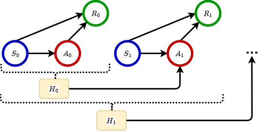

Contextual Bandits
Contents
Contextual Bandits#
Contextual bandits are primarily motivated by the fact that contextual information is commonly available in real-world applications, such as user profile (i.e., gender, occupation) and environment features (i.e., season, temperature, etc). While the reward distributions are typically unknown, contextual bandits aim to utilize the contextual information to aid in learning the reward distribution. Building upon the classical MAB framework, an agent will first observe the context, then choose an item (arm) from a few options, and finally receive a random reward for the item chosen. Consider the motivating example Recommender Systems. Suppose that there are a few movie genres available to be recommended and that every time a user visits, we would receive information about the user’s gender. Intuitively, females and males are likely to have different tastes in film genres. Therefore, contextual bandits algorithms aim to investigate how the reward of each movie genre differs depending on the gender of the user and to recommend the best movie genres whenever a user visits, with the ultimate goal of optimizing overall user satisfaction. See more application situations in [4].
Typically, there are three major versions of contextual bandits [5]:
Lipschitz Contextual Bandits [6]: assumes that the expected reward for each arm is Lipschitz regarding contexts;
Linear Contextual Bandits [7]: assumes that the expected reward for each arm is linear in the feature vector;
Contextual Bandits with Policy Classes [8]: does not make any assumptions about the expected reward but instead considers a fixed set of context-based policies from which the best policy is selected in each round.
In this chapter, we focus on linear contextual bandits and introduce two classical algorithms:
LinUCB[1],
LinTS[2,3].
Notably, while the term linear contextual bandits typically refers to algorithms that consider problems with time-varying contexts, the term Stochastic Linear Bandits refers to its static version that considers static contexts. Recent extensions include, among others, contextual bandits with an infinite number of arms, contextual bandits with sparsity, and contextual bandits in a nonstationary environments.
Problem Setting#
Let \(T\) be the total number of rounds, and \(K\) be the number of arms (actions to be selected). At each round \(t = 1, \dots, T\), the agent would first observe a vector of feature information, \(\boldsymbol{S}_t\), about the environment. Then the agent will choose one arm to play based on \(\boldsymbol{S}_t\), and then receive the corresponding stochastic reward \(R_t\) from the environment. Denote the reward that would be received if arm \(a\) is played as \(R_t(a)\), which we will refer to as the potential reward of arm \(a\). Since, in most real applications, the reward distribution of the random variable \(R_t(a)\) is always unknown, the agent needs to learn the reward distributions for each arm \(a\) from feature information and feedback received. Overall, the objective is to find a bandit algorithm to maximize the cumulative reward \(\sum_{t=1}^{T}R_{t}\).
Graphical Data Structure#

Real Data#
1. MovieLens
Movie Lens is a website that helps users find the movies they like and where they will rate the recommended movies. MovieLens 1M dataset is a dataset including the observations collected in an online movie recommendation experiment and is widely used to generate data for online bandit simulation studies. The goal of the simulation studies below is to learn the reward distribution of different movie genres and hence to recommend the optimal movie genres to the users to optimize the cumulative user satisfaction. In other words, every time a user visits the website, the agent will recommend a movie genre (\(A_t\)) to the user, and then the user will give a rating (\(R_t\)) to the genre recommended. We assume that users’ satisfaction is fully reflected through the ratings. Therefore, the ultimate goal of the bandit algorithms is to optimize the cumulative ratings received by finding and recommending the optimal movie genre that will receive the highest rating. In this chapter, we mainly focus on the top 5 Genres, including
Comedy: \(a=0\),
Drama: \(a=1\),
Action: \(a=2\),
Thriller: \(a=3\),
Sci-Fi: \(a=4\).
Therefore, \(K=5\). For each user, feature information, including age, gender and occupation, are available:
age: numerical, from 18 to 56,
gender: binary, =1 if male,
college/grad student: binary, =1 if a college/grad student,
executive/managerial: binary, =1 if a executive/managerial,
academic/educator: binary, =1 if an academic/educator,
technician/engineer: binary, =1 if a technician/engineer,
writer: if a writer, then all the previous occupation-related variables = 0 (baseline).
Furthermore, there are two different types of the reward \(R_t\):
Gaussian Bandit: \(R_t\) is a numerical variable, taking the value of \(\{1,2,3,4,5\}\), where 1 is the least satisfied and 5 is the most satisfied.
Bernoulli Bandit: \(R_t\) is a binary variable, =1 if the rating is higher than 3.
In the following, we evaluated the empirical performance of the supported algorithms on the MovieLens dataset under either the Gaussian bandit or Bernoulli bandit settings.
Reference#
[1] Chu, W., Li, L., Reyzin, L., & Schapire, R. (2011, June). Contextual bandits with linear payoff functions. In Proceedings of the Fourteenth International Conference on Artificial Intelligence and Statistics (pp. 208-214). JMLR Workshop and Conference Proceedings.
[2] Agrawal, S., & Goyal, N. (2013, May). Thompson sampling for contextual bandits with linear payoffs. In International conference on machine learning (pp. 127-135). PMLR.
[3] Kveton, B., Zaheer, M., Szepesvari, C., Li, L., Ghavamzadeh, M., & Boutilier, C. (2020, June). Randomized exploration in generalized linear bandits. In International Conference on Artificial Intelligence and Statistics (pp. 2066-2076). PMLR.
[4] Bouneffouf, D. and Rish, I. (2019). A survey on practical applications of multi-armed and contextual bandits. arXiv preprint arXiv:1904.10040.
[5] Slivkins, A. (2019). Introduction to multi-armed bandits. Foundations and Trends® in Machine Learning, 12(1-2), 1-286.
[6] Hazan, E., & Megiddo, N. (2007, June). Online learning with prior knowledge. In International Conference on Computational Learning Theory (pp. 499-513). Springer, Berlin, Heidelberg.
[7] Li, L., Chu, W., Langford, J., & Schapire, R. E. (2010, April). A contextual-bandit approach to personalized news article recommendation. In Proceedings of the 19th international conference on World wide web (pp. 661-670).
[8] Auer, P., Cesa-Bianchi, N., Freund, Y., & Schapire, R. E. (2002). The nonstochastic multiarmed bandit problem. SIAM journal on computing, 32(1), 48-77.